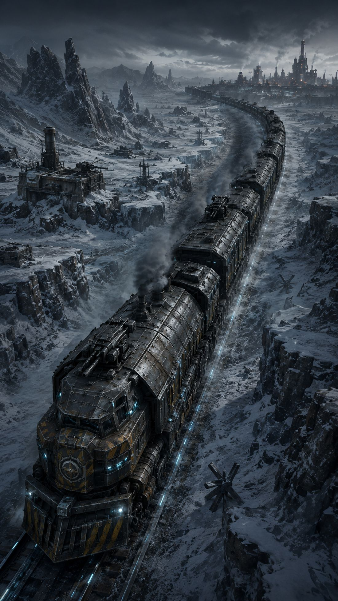
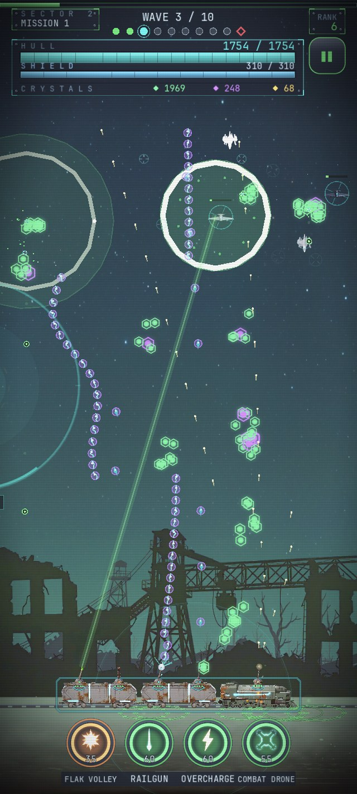
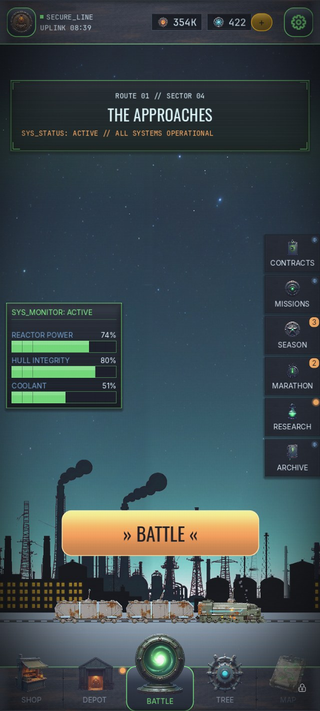
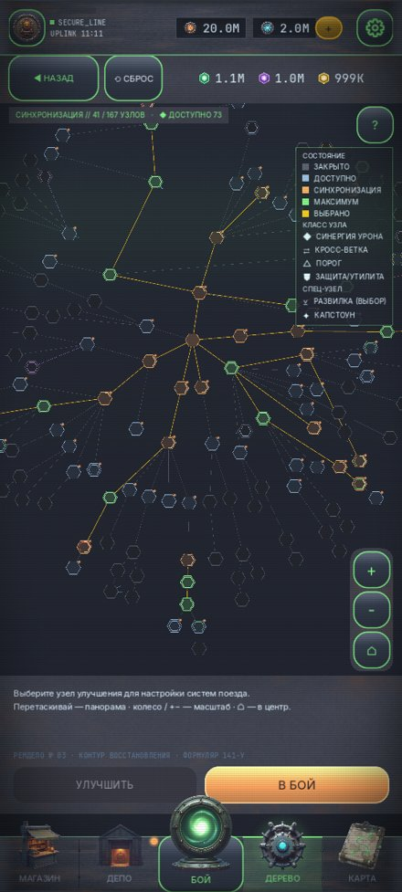

Бронепоезд держит рубеж в замёрзшей пустоши. Зенитки бьют по пикирующим, поле сбора тянет кристаллы, а между волнами вы решаете, какой системе жить.
Враги пикируют сверху. Турели держат небо, пока состав идёт через пустошь.
Вся сила рана — в контуре восстановления: 190+ узлов, платите кристаллами между волнами.
Десять биомов со своими врагами, боссами и погодой — от ледяных равнин до Ледяной цитадели.
Платформы, вагоны, орудия, модули и трофейные ядра — соберите собственный состав.


